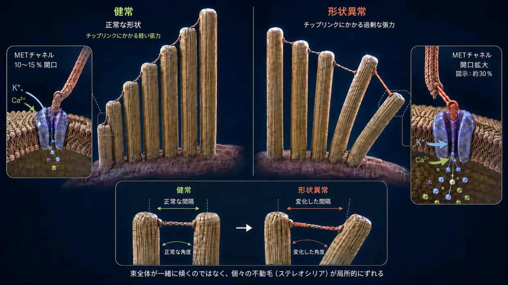
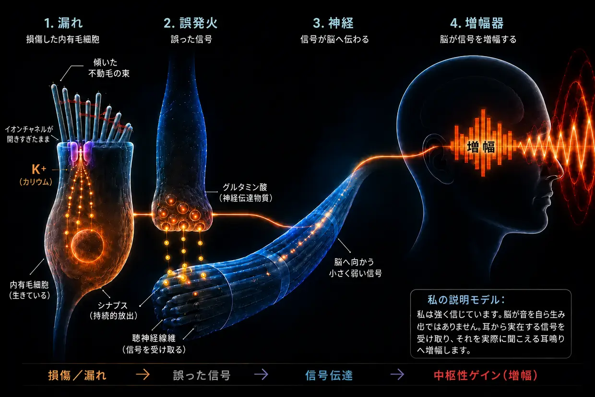

騒音性耳鳴り――耳が限界に達するとき
最終更新：2026年8月
これは、長年にわたる調査と、私自身が2度耳鳴りを克服した経験に基づく私自身の説明であり、標準的な医学的説明ではありません。
すでに自伝でお話ししたとおり、私も当時、この凄まじい病気の当事者でした。
私は絶望のあまり、こう誓いました。「耳鳴りが消えるか、それとも私が消えるか、そのどちらかだ。」（もちろん、そこまで本気だったわけではありませんが、本当にとてつもないプレッシャーにさらされていました。）
当時私が体験していたのは、主に左耳の大きく甲高い高周波音で、その遠い背景にはザーッという音もありました。それは、その時点の私に想像できた中で最悪のものでした。そのうえ、3日目には右耳にもすでに弱いピー音が現れていました。その少し後、すでにあったこの右耳の音は明らかに強まりました――私個人にとっては完全に誤りだったと判明した医師たちの指示による、直接の結果でした。
この「指示」の中核は、さらなる音でその音を覆い隠すことでした――たとえば、ヘッドホンで音量を上げた音楽を聴いたり、ノイズを絶えず流したりすることです。ところが実際には、すでに深刻な過負荷状態にあった私の耳を、さらに多くの音刺激にさらすことを意味していました。振り返れば、それは最大級の過ちの一つでした。まさにそれによって私の状態が悪化し、すでにあった右耳の弱い音が明らかに強くなったからです。
その音は、私の神経、睡眠、そして人生全体への絶え間ない攻撃のようでした。医師たちは、それと共に生きることを学ばなければならないと言いました。ネットで見つけた治療法は、互いに矛盾していました。私には、どれも途方に暮れた対応にしか思えませんでした。
そこで私は誓いました。「これがすべてであるはずがない。」取り憑かれたように調べ始め、研究論文を読み、体験談を比較し、自分なりの全体像を組み立てました。少しずつ、明確なメカニズムが見えてきました――私には筋が通っており、のちに私自身の体験でも確かめられた全体像です。
今では、こう言えます。騒音性耳鳴りは謎ではありません。耳が過負荷になった結果です――そこで何が起きているのかを理解すれば、なぜその音があるのか、自分自身で何ができるのかも分かります。
要約 60秒で読む――重要な点をひと目で
極端な音量（たとえばディスコ）では、ポンプはもはや処理に追いつけません。エネルギー消費（ATP）は爆発的に増え、細胞はエネルギーを供給しきれなくなり、乳酸が生じ、内部環境が酸性化する不完全な緊急モードへ切り替わります――短距離走で筋肉が力を出せなくなるのと似た、負のスパイラルです。ポンプが追いつかなくなると、微小な不動毛（ステレオシリア）の内部にカルシウムが蓄積します。この余分なカルシウムが分解酵素（カルパイン）を活性化し、不動毛内部の構造繊維どうしをつなぐ「接着剤」（クロスリンカー）を食い荒らします。この接着剤がなくなると、不動毛は剛性を失い、変形します。すると、先端のイオンチャネルが、傾けて開けた窓のように、開きすぎたままになります。この持続的な漏れを通じてカリウムが絶えず流入し、細胞全体を、電圧がかかり続ける状態に保ちます。この電圧によって内有毛細胞そのものの別のチャネルが開き、カルシウムがシナプスへ滴るように流れ込み、そこで聴神経に向けてグルタミン酸が途切れなく放出される状態を引き起こします。脳は、この微弱ではあるものの一定の誤信号を受け取り、この周波数帯では正常な入力が欠けていることを認識し、内部のプリアンプ（中枢性ゲイン）を極端に引き上げます。この増幅が加わって初めて、かすかな誤信号が意識にのぼる音――耳鳴り――になります。
よい知らせ：細胞が生きている限り、修復の設計図も、修復する能力も備わっています。そのために必要なのは、エネルギー、材料、そして休息です。
耳の中で本当に起きていること：正常な生理学的聴覚過程
話を掘り下げる前に、本文全体で用語を正しく理解できるよう、短く整理しておきます。内耳には有毛細胞と呼ばれる、聴覚そのものを担う感覚細胞があります。個々の有毛細胞の表面には、指のような微小な突起が束になって立っています――それが不動毛（ステレオシリア）です。1個の有毛細胞につき、蝸牛内の位置に応じて約50～300本あり、オルガンのパイプのように、短いものから長いものへ列をなして並んでいます。一本一本の不動毛には、アクチンタンパク質からなる固有の内部骨格があります。日常でも研究でも、これらのステレオシリアは単に「不動毛」や「感覚毛」と呼ばれることが多く、このページでも私はその呼び方を使います。重要なのは、私が「不動毛」と書くとき、それは常に有毛細胞の上にあるステレオシリアを指し、有毛細胞そのものを指すのではないということです。
信号の連鎖について重要な点：私がシナプスでのグルタミン酸放出と聴神経への信号について述べるとき、明確に指しているのは内有毛細胞です。
通常、聴覚の過程は、極めて精密な連鎖反応として進みます。
刺激：音刺激が有毛細胞の細い不動毛（ステレオシリア）に当たり、それを横へ曲げます。
機械的な引っ張り（チップリンク）：これらの不動毛の先端どうしは極めて細いタンパク質の糸（チップリンク）でつながっているため、曲がることで張力が生じます。この糸は機械式の引き綱のように働き、先端のイオンチャネルを物理的に引き開けます――浴槽の栓を引っ張って開けるようなものです。
流入：内耳はカリウムを豊富に含む液体で満たされているため、開いたチャネルを通ってカリウム（K+）がすぐに不動毛へ流れ込み、少量のカルシウムも流入します。
活性化：このカリウム流入が内有毛細胞の電位を変化させます（脱分極）。その結果、二次的に、内有毛細胞そのもののさらに下方にあるカルシウムチャネルが開きます――不動毛ではなく、その下の細胞体にあるチャネルです。
信号：こうして内有毛細胞へ流入したカルシウムが初めて神経伝達物質の放出を引き起こし、その信号が聴神経を介して脳へ送られます。
リセット：その後、不動毛と有毛細胞の細胞体の両方にある専用の輸送体が、ATP（細胞エネルギー）を使って余分なカリウムとカルシウムを再び外へ汲み出します。こうして細胞は落ち着くことができます。
このシステムは、少しだけ「入って、出る」ことが絶えず繰り返されるようにできています――呼吸のようなリズムです。ここで決定的なのは、不動毛の先端にあるチャネルが安静時にも完全には閉じず、常に少しだけ開いていることです。これは正常であり、細胞がいつでも、ごく小さな音にも即座に反応できるよう意図された状態です。不動毛がまっすぐ立っている限り、この開口は最小限に制御されます。しかし不動毛が横へ傾いたままになると、チャネルは大きく開きすぎた状態になり――まさにそれが問題になります。
このシステムが過負荷になったとき何が起こるのかを見る前に、ここで一つ重要な考えがあります。音響外傷の後に慢性耳鳴りが生じると、多くの当事者は――多くの医師もそうした印象を与えていますが――耳の有毛細胞は不可逆的に破壊され、脳が今や自ら、記憶をもとにその音を作り出している、と考えます。私の確信では、この見方では不十分です。まさにその音が現に「ある」からこそ、まだ興奮性を保つ末梢組織のどこかで能動的な誤信号が生じていなければならないと、私は確信しています。私の主要な連鎖モデルでは、この信号は、まだ生きていながら調節不全に陥った内有毛細胞から来ます。別の末梢性の状況では、ミエリンの問題や炎症によって誤発火する、生きた聴神経が発生源となる可能性もあります。一方、完全に死滅した組織は、もはや信号を送りません。
ここからは、この機能喪失について、段階を追って詳しく説明します。より簡潔に知りたい方は、このページの上の方に要約があります。
騒音が強すぎるとき（ディスコに行ったとき何が起こるのか）
一度に、あるいは持続的に（慢性的に）過剰な音が加わると、バランスが崩れ、機械的な仕組みが破綻します。ディスコに行くたびにそうなるわけではありません――しかし騒音性耳鳴りが生じるとき、その背後にあるメカニズムは、まさにこれだと私は確信しています。エネルギーの喪失、機械的崩壊、化学的な氾濫からなるカスケード――互いをあおり合い、悪循環へ行き着く3つの過程です。
- 01エネルギー崩壊
- 02機械的崩壊
- 03緊急救助＆ハムスターの回し車
第1段階：エネルギー崩壊
正常な聴覚の仕組みを思い出してください。音の刺激を受けるたびに、イオンが細胞内へ流れ込み、その後ATPを消費して外へくみ出さなければなりません。通常の音量なら、それはゆったりしたリズムです――細胞は余裕をもってくみ出し、エネルギーもあり余っています。ところがディスコの100デシベルでは、音波が途切れることなく、凄まじい力で不動毛へ叩きつけます。チャネルが勢いよく開き、イオンが大量に流れ込み、ポンプはもうまったく追いつきません。エネルギー消費が爆発的に増えます。
有毛細胞は今や、補充できる量をはるかに上回るエネルギーを激しく消費します。細胞の通常の発電所（ミトコンドリア）は限界で稼働します。莫大なエネルギー需要をどうにか満たすため、細胞は、より速い一方でクリーンとは言えない緊急経路に頼ります。嫌気性解糖です。この緊急モードはすぐにエネルギーを供給する一方で、老廃物として乳酸（ラクテート）を生み出し、細胞内環境を酸性へ傾けます。エネルギー産生を担う酵素は、その酸によってますます効率を落としていきます――下降の一途をたどる悪循環です。
スポーツにたとえると、ウェイトトレーニングや全力疾走で誰もが知っている感覚です。しばらくすると筋肉が「燃える」ように感じ始め（乳酸が増加し）、やがてまったく動かなくなります――いわゆる筋肉の限界です。まさにこの化学的な機能不全が内耳でも起きます。ただし、痛みではなく、機能停止として現れます。
そして、まさにここに本当の危険が潜んでいます。ポンプが追いつかなくなると、不動毛の内部にカルシウムが蓄積します。このカルシウムは少量なら正常であり、必要でもあります――しかし過剰になると、破壊者へ変わります。何を破壊し、なぜそれほど致命的なのかを、第2段階で説明します。
第2段階：機械的崩壊
カルシウムがここで何を引き起こすのかを理解するには、まず不動毛の内部構造を少し知る必要があります。不動毛は、平行に並ぶ数百本のアクチンフィラメントでできています――ゆでる前のスパゲッティを束ねたものと考えてください。これらのフィラメントを接着しているのが、アクチン架橋タンパク質（クロスリンカー）と呼ばれる短いタンパク質の橋です。このクロスリンカーこそ、不動毛の構造を支える「構造技師」です。エネルギーを使わなくても、束を鋼管のように硬く、ひとりでに直立させられるほど強固にまとめています。クロスリンカーが無傷であるかぎり、不動毛はまっすぐ立っています。
第1段階でエネルギーが失われることで、ここから致命的な連鎖反応が始まります。
ポンプが圧倒される（カルシウムの氾濫）：正常な聴覚の仕組みで見たように、カリウムとともに、ごく少量のカルシウムも常に不動毛へ流れ込みます。通常の状態なら問題はありません。不動毛の膜には専用のカルシウムポンプがあり、このカルシウムをすぐに外へ運び出すからです。しかし、このポンプにもATPが必要です。そしてディスコで急性の過負荷がかかると、エネルギーは到底足りず、ポンプはまさに流入に押し切られます。その結果、通常なら問題にならないほど少量のカルシウムさえ、不動毛の内部に蓄積します――そして、まさにこの過剰な濃度が、本当の構造崩壊を引き起こします。
そして、ここで本当の構造崩壊が起きます。蓄積したカルシウムが、特殊な分解酵素（いわゆるカルパイン）を活性化します。この酵素は、先ほど見たクロスリンカー――束をまとめているモルタル――を、まさに食い尽くします。
なぜこれほど壊滅的なのかを理解するには、単純なたとえが役立ちます。
ゆでる前のスパゲッティを1本、手に取ってみてください――簡単に曲げ、折ることができます。今度は100本のスパゲッティを瞬間接着剤で接着し、固い1本の棒にしてみてください――たちまち、ほとんど曲がらない硬い管になります。1本1本は弱くても、接着されてまとまれば強いのです。
不動毛も、まさに同じ仕組みです。硬さを生むのはアクチンフィラメントだけではなく、クロスリンカーによってフィラメント同士が束になっていることです。
カルパインがこの接着剤を食い尽くすと、逆のことが起きます。硬い管は再び、ばらばらのフィラメントへ戻ります。アクチンフィラメントは今も不動毛の中にあります――なくなったわけではありません。しかし、間をつなぐ結合がなければ、まとまりません。不動毛が硬さを失うのは、何かが折れたからではなく、内部の結束が失われたからです。
そのままディスコに居続けると、さらに悪化することがよくあります。今や保護を失ってむき出しになった個々のフィラメントは、続く音圧にさらされ、弱い箇所で実際に折れることがあります――隣の支えを失ったスパゲッティが、負荷で折れ曲がるように。そして1本のフィラメントが折れると、隣のフィラメントにかかる負荷が増え、それらも折れる可能性があります――カスケードが起こりかねません。
その結果：内部の支えを失った不動毛は、直立した姿勢を保てず、変形します。それが何を意味するのかを想像するには、次のイメージが役立ちます。不動毛は長さの違うものが列をなして隣り合い、その先端同士が細い糸（チップリンク）でつながっています。健常な状態では、すべての不動毛がまっすぐ直立しています。間の糸にはちょうどよい張力がかかり、安静時のチャネルはごくわずかにしか開いていません。音波が来ると、不動毛は一瞬横へ傾き、糸が張ってチャネルが開きます――そして波が過ぎると元へ戻り、すべての緊張が解けます。きれいな開閉です。
今度は、同じ不動毛がまっすぐ立たず、斜めに傾いたままだと想像してください――波が来てもいないのに、すでに傾いているのです。間の糸には、本来とは異なる張力が常にかかっています。同時に、膜もゆがんでいます。そのため、チャネルは安静時から開きすぎた状態になります。この時点から、音楽がとっくに止んでいても、カリウムとカルシウムが絶え間なく、制御されないまま細胞へ流れ込みます。恒常的な漏れが生じたのです――そして、それが耳鳴りの土台となります。内有毛細胞は、音がないのに信号を発します――不動毛の幾何学的な配置が崩れているからです。

騒音性耳鳴りは、騒音にさらされた直後に気づくこともあれば、数時間後または数日後になって初めて意識されることもあります。私の場合、音に気づいたのは3日目でした。なぜなのかは、今でもはっきりとは分かりません。考えられる説明については、FAQで仮説として明確に説明します。
第3段階：緊急救助――それでも足りない理由
細胞は損傷を検知すると、ただちに生存メカニズムを作動させます。細胞体に非常用の備蓄としてすでに用意されている特殊な修復タンパク質（XIRP2など）が、損傷箇所へ一気に駆けつけます。フィラメントに破断が生じている場合、この修復タンパク質は分子レベルの強力なダクトテープのように、破断箇所（第2段階のスパゲッティ）へ巻きつきます。そして、フィラメントが完全に切断され、カスケードが制御不能になるのを防ぎます。これがフェーズ1：急性期の緊急安定化です。この過程は速く（数分から数時間）、XIRP2を一から作る必要がないからです――損傷箇所へ送り込まれるだけです。不動毛は生き残ります――しかし、フィラメント間に欠けているクロスリンカーをXIRP2が代替することはできないため、骨格は軟らかく不安定なままです。
ここで本来なら、どうしてもフェーズ2（能動的リモデリング）が始まらなければなりません――しかも、同時に2つの工事が必要です。第一に、XIRP2のパッチを、新しい無傷のアクチンで置き換える必要があります。第二に、新たなクロスリンカーを合成してフィラメント間へ組み込み、束を再び固い1本の棒に接着し直さなければなりません。どちらにも大量のATPが必要で、どちらにも細胞体からの材料が必要です。そして不動毛には独自の発電所（ミトコンドリア）がなく、下にある有毛細胞の細胞体から届けられるエネルギーに全面的に依存しています。ところが成人の大半では、まさにこの地点で慢性化の罠がぱちりと閉じます。その理由を、次の章で説明します。
-
01エネルギー崩壊
ATP消費が爆発的に増え、細胞は緊急モードへ切り替わる。乳酸が蓄積し、細胞内環境が酸性化する。
-
02機械的崩壊
過剰なカルシウムが、不動毛の内部フィラメント同士をつなぐ「接着剤」を食い尽くす。不動毛が変形し、漏れが生じる。
-
03緊急救助＆ハムスターの回し車
XIRP2が破断箇所を安定化する。急性期には細胞が生き残る――しかし本格的な修復に使うエネルギーがない。
ハムスターの回し車の罠：なぜ修復がいつまでも進まないのか
ここから、急性の出来事が慢性の問題へ移行する決定的な段階に入ります。
騒音が止むとすぐ、回復が始まります。細胞はただちにATPを再び作り始め、ポンプも少しずつ通常運転へ戻っていきます。その後、再生の全工程――酸の除去、修復作業、エネルギー備蓄の補充――は、時間をかけて、とりわけ睡眠中に進みます。つまり身体は後片付けを始めます。ディスコで受けた激しい負荷と、その時点までに生じていた漏れの両方によって急激に蓄積した大量のイオンは、少しずつ外へ排出されます。極端だったイオンのピークはおおむね正常化し、それに伴いカルシウム濃度も臨界閾値を下回ります。すると分解酵素（カルパイン）は不活性化し、進行中の構造損傷が止まります。
それでも、なぜ耳は治らないのでしょうか？
恒常的な漏れが残るからです。不動毛は傾いたままで、イオンチャネルも常に開きすぎたままです。ポンプは、この余分なイオンを24時間休みなく外へ運び出さなければなりません。なぜそれが修復を妨げるのかを正確に理解するには、次のイメージが役立ちます。
「屋根・家・地下室」の原理
このジレンマをひと目で理解するには、有毛細胞を、たった1つの電力メーター（ATP）を通じて電力を供給される建物として考えると分かりやすくなります：
屋根：弱ったアクチン骨格を持ち、フェーズ1の緊急モードから抜け出せない細い不動毛（ステレオシリア）です。漏れがあるのはこの上部で、本来ならここで修復の仕組みが働くはずです。ところが代わりに、屋根に備わったポンプが、流れ込んでくるカリウム、とりわけ危険なカルシウムを絶えず外へ運び出すことに追われています。というのも、この上部でカルシウムが再び臨界閾値を超えれば、分解酵素が再び活性化し、損傷を悪化させかねないからです。
家：細胞の本体である大きな細胞体です。そしてここは、細胞のあらゆる領域に必要なATPを作る発電所（ミトコンドリア）が存在する唯一の場所です。壊れた屋根から、今や余分なイオンが絶え間なく流れ込んでいます。
地下室：この下部にもイオンポンプがあり、家が完全に水浸しになって細胞が死なないよう、漏れ落ちたカルシウムを必死に流れに逆らって外へ汲み出さなければなりません。
屋根と地下室のポンプはどちらも、建物が水浸しになるのを防ぐためだけに、利用できるエネルギーの大半を消費します。そのため細胞には、建設作業員を送り出してアクチン骨格の損傷を修復するための資源がもう残っていません。修復はいつまでも先送りされます。漏れは開いたままです。ポンプは休みなく働き続けます。ハムスターの回し車は回り続けます。
生存を懸けた闘いから音へ：耳鳴りはこうして生まれる

これで、恒常的な漏れが存在し、細胞がハムスターの回し車に陥っていることが分かりました。では、それがどうやって聞こえる音になるのでしょうか？ 絶えず流れ込むカリウムによって、内有毛細胞全体は常に電位がかかった状態（脱分極した状態）に保たれ、静止膜電位には決して戻れません。この持続的な電位によって、内有毛細胞のさらに下部にある電位依存性カルシウムチャネルが開き続け、そこから少量のカルシウムが絶えずシナプスへ滴り落ちます。このカルシウムにより、神経伝達物質グルタミン酸が聴神経へ絶え間なく少量ずつ放出されます。音が存在しないにもかかわらず、脳は絶え間ない「発火！」信号を受け取り、この化学的な短絡を音として解釈します。
脳はそれをどう処理するのか：原因ではなく、増幅器
ここで、脳が舞台に登場します。現代医学はしばしば、脳が耳鳴りを「学習」し、今では脳だけで音を作り出していると主張します。私は、この説明は不完全だと確信しています。脳が何もないところから耳鳴りを作り出すわけではありません。脳は高度に複雑なプロセッサとして、耳から絶えず流れてくる異常なグルタミン酸の漏出信号に反応しているのです。
騒音による損傷と傾いた不動毛によって、実際に外から入ってくるクリアな信号（正常な周波数）が欠けるため、脳の聴覚中枢は一種の感覚遮断状態に陥ります。進化的な防御機構として、脳は容赦なく反応します。まさに欠けているその周波数のプリアンプを極端に上げるのです。これが、いわゆる「中枢性ゲイン」です。野生環境では、耳を損傷していても忍び寄る捕食動物の足音を聞き取るために、これは生存上不可欠でした。つまり脳は、損傷した内有毛細胞から出る、本来はかすかな漏れ信号を、巨大なイコライザーへ叩き込みます。そしてその信号を、私たちが耳鳴りとして意識的に知覚する、耳をつんざくようなサイレンにまで増幅します。
致命的なマスキングの罠：ノイズアプリを使うことが最悪の選択である理由
マスキングは、耳にまだ残されている唯一の修復時間を焼き尽くします。
私の経験では、ここに、当事者が医師の助言に従って犯してしまう最も重大な間違いがあります。昔からの定番の勧めは、「耳鳴りをホワイトノイズ、自然音、または小さな音量の音楽で覆い隠してください」というものです。直感的には理にかなっているように聞こえ、実際、短期的には楽になります。しかし、私の理解では、生化学的に致命的です。
はっきり認識しなければならないのは、不動毛はまだ生きていて活動しているものの、斜めに傾いているということです。細胞は本来、休息できる時間（特に睡眠中）をすべて利用し、残っているわずかなエネルギーで構造を修復し、不動毛を再びまっすぐ立て直そうとします。
ところが、耳に人工的な音を浴びせ続けると、損傷した不動毛（ステレオシリア）を再び作業モードへ無理やり戻すことになります。不動毛はまた音に反応して、イオンをくみ出さなければならず、フェーズ2――本来の修復――のために蓄えていた、まさにそのエネルギーを消費します。さらに、もう一つ問題があります。音波が来るたびに、損傷した束の中でアクチンフィラメント同士が滑り合います。新たに組み込まれたクロスリンカーは、きちんと結合する前に、この絶え間ない動きによって再び振り落とされてしまいます。誰かがはしごを揺らしている最中に、そのはしごへ横木を取り付けようとするようなものです。
屋根・家・地下室の図で言えば、人工的な音が、もともとすでに柔らかくなっている屋根を機械的に激しく揺さぶります。漏れは大きく開いたままです。地下室のポンプは、1日24時間、限界ぎりぎりで動かなければなりません。屋根の上の作業員には、エネルギーがまったく残りません。
これは、私自身も経験し、数え切れないほどの当事者が報告している現象を説明します。夜、耳鳴りをノイズで覆い隠すと、短期的には楽になります。しかし翌朝には、耳鳴りが前の晩よりも攻撃的で大きくなっています。その理由は、細胞が人工音の処理に夜勤――唯一の修復時間――を使い果たしてしまったからです。
率直に言います。マスキングでうまく暮らせる人がいる理由は、私にもよく分かります。耳鳴りによって精神的に奈落の底へ突き落とされ、眠ることもできないなら、短時間だけ覆い隠すことが、文字どおり命を救う場合もあります――そのような状態にある人に、それをやめろと説得するつもりはありません。しかし、本来の再生――つまり、耳鳴りが実際に再び消えるようにすること――にとっては、私の理解では、マスキングは逆効果です。私が指摘したいのは、この違いです。
希望：なぜ修復は可能なのか
こうしたメカニズムがすべてあっても、決定的な希望の光があります。細胞核は無傷で、アクチン骨格も基本的にはまだ存在するため、細胞はその構造を修復できます。不動毛には活発なアクチンターンオーバーがあり、アクチンフィラメントは絶えず分解され、再び組み立てられています。つまり、細胞は自らの構造を常に更新しています。フェーズ2を具体的に言えば、フィラメントの破断箇所にあるXIRP2のパッチが新しいアクチンに置き換えられ、新たなクロスリンカーがフィラメント同士の間へ組み込まれ、束が再び強く硬くなるまで修復が続きます。問題は、細胞が修復できるかどうかではありません。与えられた条件下で、修復に必要なエネルギーと材料が十分にあるか、そして必要な休息を与えられるかどうかです。
内部の支持骨格が大きく崩壊していたとしても、それが最終的な結論になるわけではありません。細胞が生きている限り、設計図と、その骨格を再び組み立てる能力を持っています――十分なエネルギー（ATP）と材料が再び用意され、化学的ストレスが止まれば、再構築できるのです。
興味深いことに、まさにこの原理――細胞エネルギー（ATP）を増やすこと――は製薬研究でも追究されており、私の説明モデルを支持しています（ただし、ATP/ROSへの効果がこれまで示されているのは細胞培養だけです）。AC102という薬剤は、まさにこのメカニズムを標的にしています。動物モデル（スナネズミ）では、AC102を1回投与した後の5週間で、耳鳴りに典型的な行動パターンがほぼ完全に消退しました（最後までその行動パターンが残っていたのは15匹中わずか1匹で、プラセボ群では大部分の個体に残っていました）。これは、耳鳴りの行動学的指標として認められている驚愕反射（GPIAS）で測定されたものです。人間では、これに関する臨床第2相試験が現在進行中で、その結果は2026年に出ると見込まれています（私の出典ページに掲載したAC102の研究状況 →）。低出力レーザー療法（フォトバイオモジュレーション）も、この根本的なエネルギー・アプローチを狙ったものです。
結論
私の主要モデルにおいて、慢性の騒音性耳鳴りとは生理学的に何なのか。それは、まだ興奮性を保っている末梢組織から発せられる能動的な誤信号です。私自身のエピソードについては、エネルギー面で緊急運転から抜け出せなくなった、生きた内有毛細胞が主な発信源ではないかと考えています。聴神経やミエリンも関与している可能性はあると思いますが、私の場合、それを確実に裏づけることはできません。脳は、信号が完全にないところから耳鳴りを作り出すのではなく、すでにある誤信号を増幅します。
耳鳴りが残るかどうかは、細胞が漏れを塞げるよう助け、ポンプに再びエネルギーを供給し、不動毛をもう一度起き上がらせられるかどうかに、ひとえにかかっています。
では、騒音性耳鳴りにどう対処すればよいのか？
メカニズムは複雑でも、すぐに理解しておくべき中心的な調整ポイントが3つあります。それが具体的に何なのか、そして当時、私が二度とも耳鳴りから抜け出し、完全に消えるまでに、それらがどう役立ったのかは、私の解決アプローチのページで詳しく説明しています。
この3つの調整ポイントが具体的にどのようなものか、そして当時、私にどう役立ったのかは、次のページで説明します。
全体を一つの流れで見る
音響外傷を受けたときに何が起きるのかは、私の説明モデルに沿って、途切れない一つの連鎖にまとめることができます。
極端な音量（たとえばディスコ）では、ポンプはもはや処理に追いつけません。エネルギー消費（ATP）は爆発的に増え、細胞はエネルギーを供給しきれなくなり、乳酸が生じ、内部環境が酸性化する不完全な緊急モードへ切り替わります――短距離走で筋肉が力を出せなくなるのと似た、負のスパイラルです。ポンプが追いつかなくなると、微小な不動毛（ステレオシリア）の内部にカルシウムが蓄積します。この余分なカルシウムが分解酵素（カルパイン）を活性化し、不動毛内部の構造繊維どうしをつなぐ「接着剤」（クロスリンカー）を食い荒らします。この接着剤がなくなると、不動毛は剛性を失い、変形します。すると、先端のイオンチャネルが、傾けて開けた窓のように、開きすぎたままになります。この持続的な漏れを通じてカリウムが絶えず流入し、細胞全体を、電圧がかかり続ける状態に保ちます。この電圧によって内有毛細胞そのものの別のチャネルが開き、カルシウムがシナプスへ滴るように流れ込み、そこで聴神経に向けてグルタミン酸が途切れなく放出される状態を引き起こします。脳は、この微弱ではあるものの一定の誤信号を受け取り、この周波数帯では正常な入力が欠けていることを認識し、内部のプリアンプ（中枢性ゲイン）を極端に引き上げます。この増幅が加わって初めて、かすかな誤信号が意識にのぼる音――耳鳴り――になります。
悲劇的なのは、ディスコの後にエネルギーがある程度回復しても、ポンプがその大部分を、恒常的な漏れに対処して細胞を生かしておくためだけに使ってしまうことです。本来の修復――新しいクロスリンカーを作り、骨格を再び立て直すこと――に使えるものは何も残りません。細胞はハムスターの回し車から抜け出せなくなります。耳鳴りが一時的なものにとどまるか慢性化するかは、どれだけの接着剤が破壊されたか（少なければ修復可能、多ければハムスターの回し車）、耳を休ませるか、それとも音を浴びせ続けるか（私の経験では、ノイズによるマスキングは状態を悪化させます）、そして身体に十分なエネルギーと材料が供給されるかによって決まります。良い知らせは、細胞が生きている限り、設計図と修復能力を持っているということです――そのために必要なのは、エネルギー、材料、そして休息です。
さらに掘り下げる質問とFAQ
さらに深く知りたい方へ。FAQページでは、騒音性耳鳴りに関するほかのテーマも取り上げていきます。たとえば、耳鳴りの音量が変動するのはなぜか、耳鳴りを覆い隠すと一時的に小さくなるのはなぜか、そしてその直後に再び大きくなるのはなぜか、といった内容です。FAQページは現在、少しずつ拡充しています。
重要な注意
耳鳴りや聴覚の問題がある場合、特に急に現れた場合は、器質的な原因がないか確認するため、耳鼻咽喉科医の診察を受けてください。このウェブサイトで共有している内容、説明モデル、アプローチは医療上の助言ではなく、私個人の体験談と独自の調査です。身体は一人ひとり異なります。私は医師ではなく、治癒を約束しません。ここに記したアプローチを実行する場合は、自己責任となります。